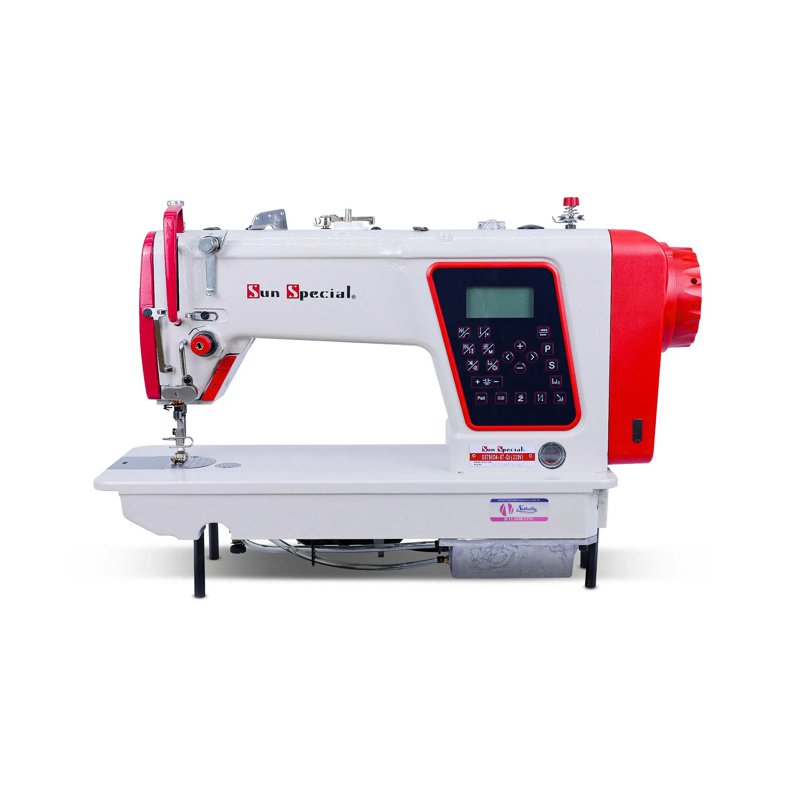
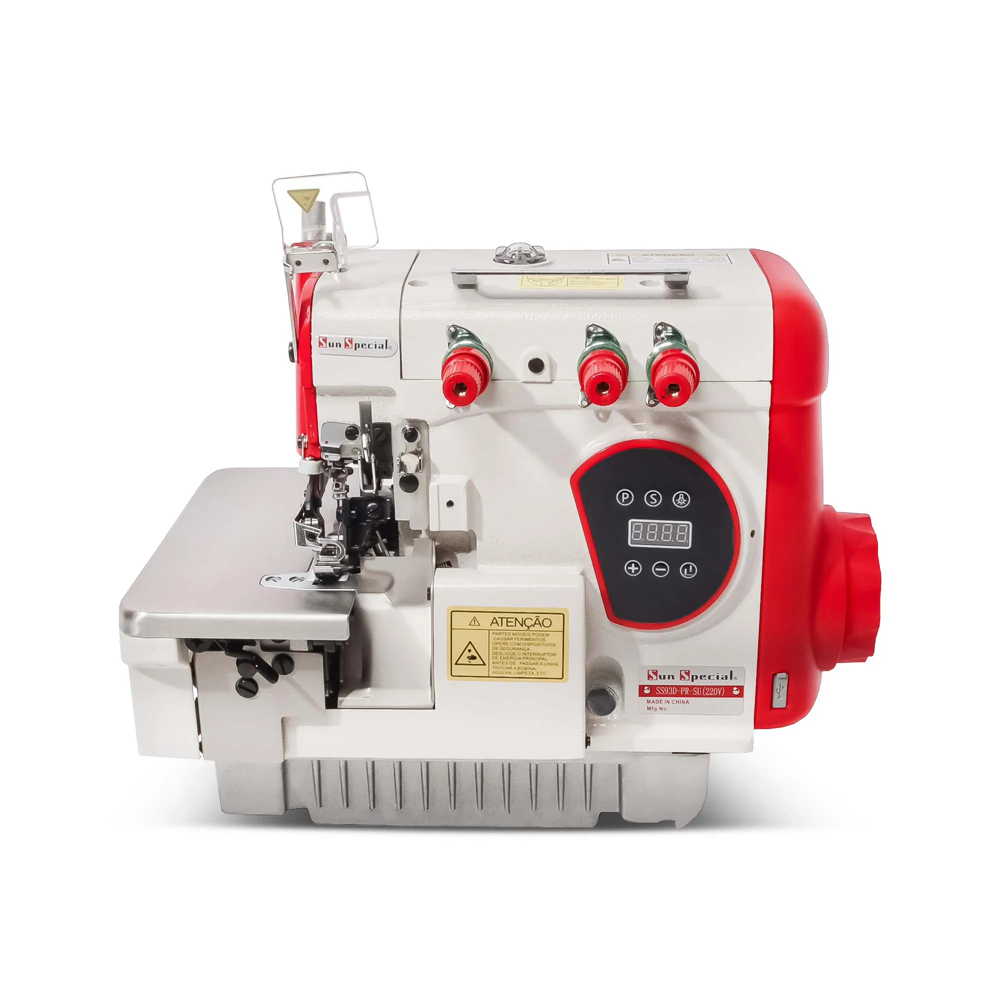
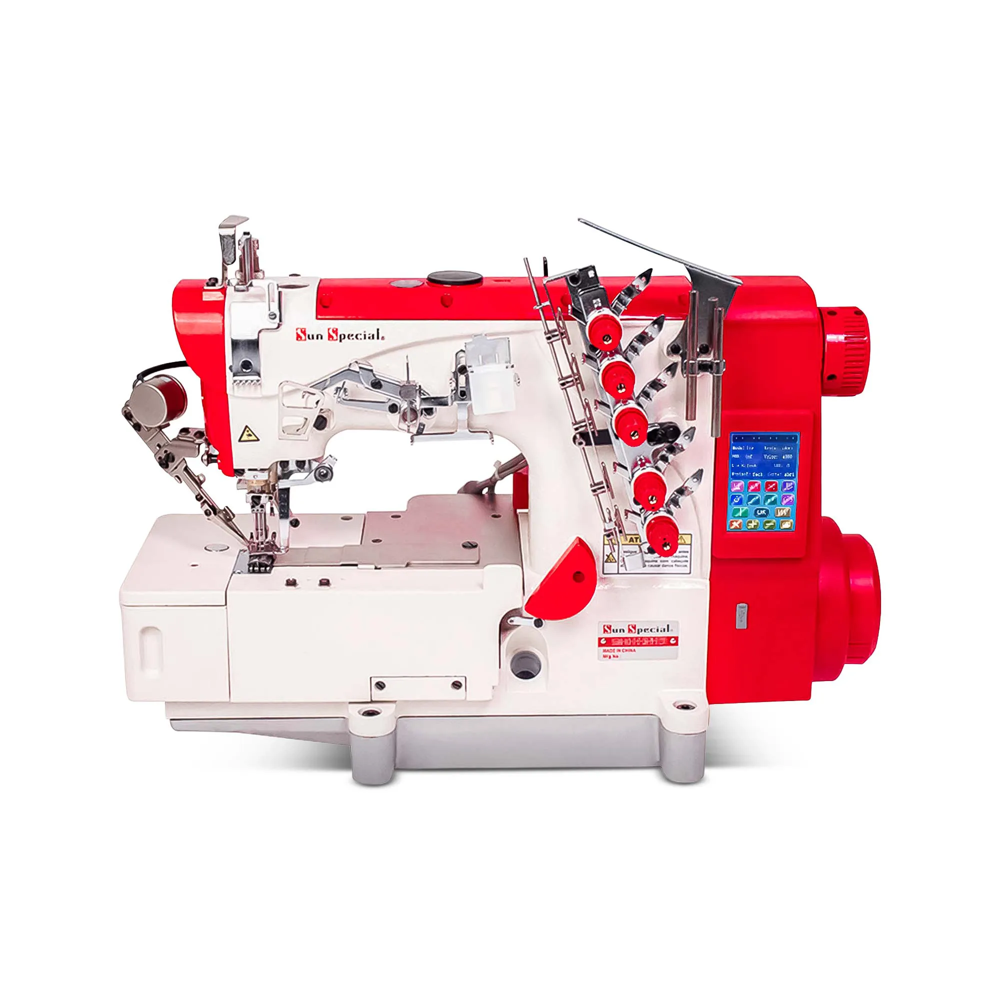
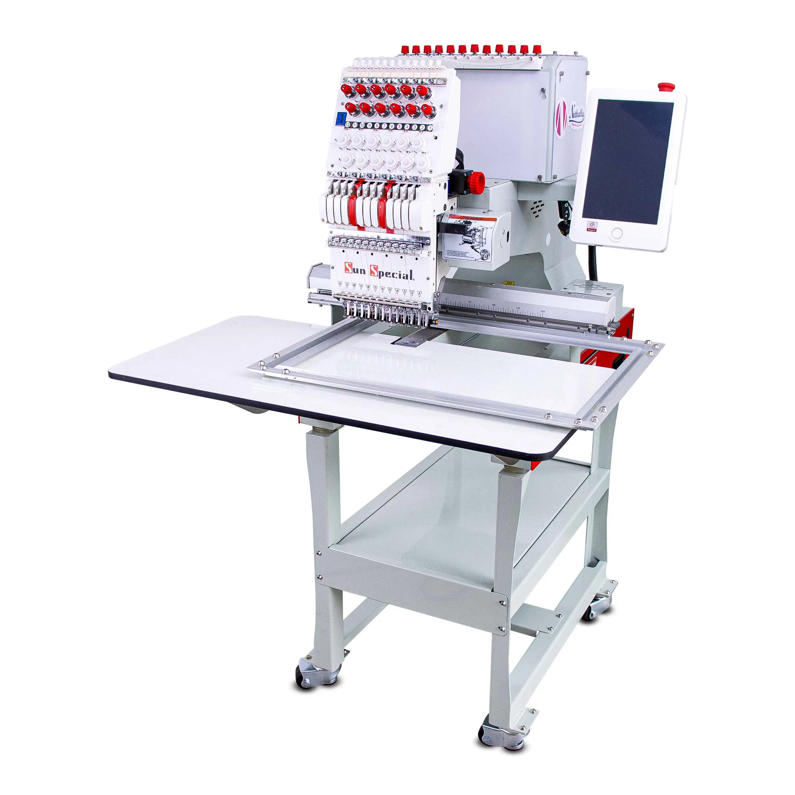

RETAS
Reta Direct Drive
Precisão para o dia a dia.
Encontre a máquina ideal para cada etapa da sua confecção.

Precisão para o dia a dia.

Acabamento para sua confecção.

Bainhas com alta qualidade.

Bordados e personalização.
Na Tekmak do Brasil, a assistência técnica faz parte do nosso compromisso com o cliente. Acompanhamos você da instalação à operação, para ajudar a manter desempenho, produtividade e confiabilidade.
Costura industrial, bordado, sublimação, DTF, UV, comunicação visual, prensas, calandras e corte a laser.
Maranhão, Pará, Piauí e Tocantins, com planejamento conforme a localização e a necessidade de cada cliente.